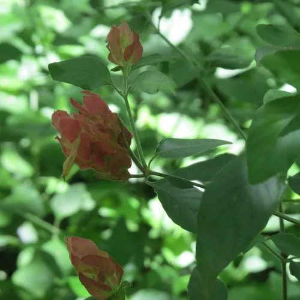

花卉与草本 · 植物界
虾衣花 Justicia brandegeeana

爵床科爵床属常绿灌木，花序具红褐色苞片、白色花冠，形似一串下弯的虾，是南方庭园中奇趣的观花植物。
- 分类
- 门被子植物门纲木兰纲目唇形目科爵床科属爵床属
- 栖息环境
- 墨西哥、危地马拉的热带灌丛，喜温暖湿润、阳光充足
- 地理分布
- 原产墨西哥、危地马拉；中国华南、西南及世界温暖地区栽培
- 保护级别
- IUCN 暂无评估；栽培广泛，野生种群未受明显威胁
物种志
虾衣花为常绿灌木，高 1–1.5 米，茎细长、多分枝，基部常木质化。叶片卵形至椭圆状卵形，长 4–8 厘米，全缘，对生。穗状花序顶生或腋生，长 10–15 厘米，苞片红褐色、叠瓦状排列，形似虾壳；花冠白色，具红色斑点，二唇形，从苞片中伸出，整串花序微微下弯，酷似一只煮熟的虾。
本种原产墨西哥与危地马拉，喜温暖湿润、阳光充足的环境，在中国华南、西南常作盆栽或庭园花灌木。它的“虾衣”其实是红褐色的苞片，真正的花是白色的二唇形小花，花期可从春末持续到秋季。虾衣花不耐寒，北方需盆栽温室越冬；生长迅速，需定期摘心促分枝。其花形奇特，是科普与摄影爱好者的宠儿。
形态与习性
- 株高1–1.5 米，茎细长多分枝
- 花期5–10 月，苞片红褐色
- 花序长 10–15 厘米，形似下弯的虾
- 光照喜光，夏季适当遮阴
- 水分喜湿润，忌积水
- 土壤疏松肥沃的微酸性壤土
- 主要用途盆栽、花境与庭园观赏
趣味知识
- 虾衣花红褐色的“虾壳”其实是苞片，白色的小花才是真正的花。
- 它的花序自然下弯，加上层层叠叠的苞片，远看像一只煮熟的虾。
- 虾衣花原产墨西哥，20 世纪初传入欧洲后成为温室观赏植物。
- 它属于爵床科，与珊瑚花、金苞花是近亲，花的结构相似。